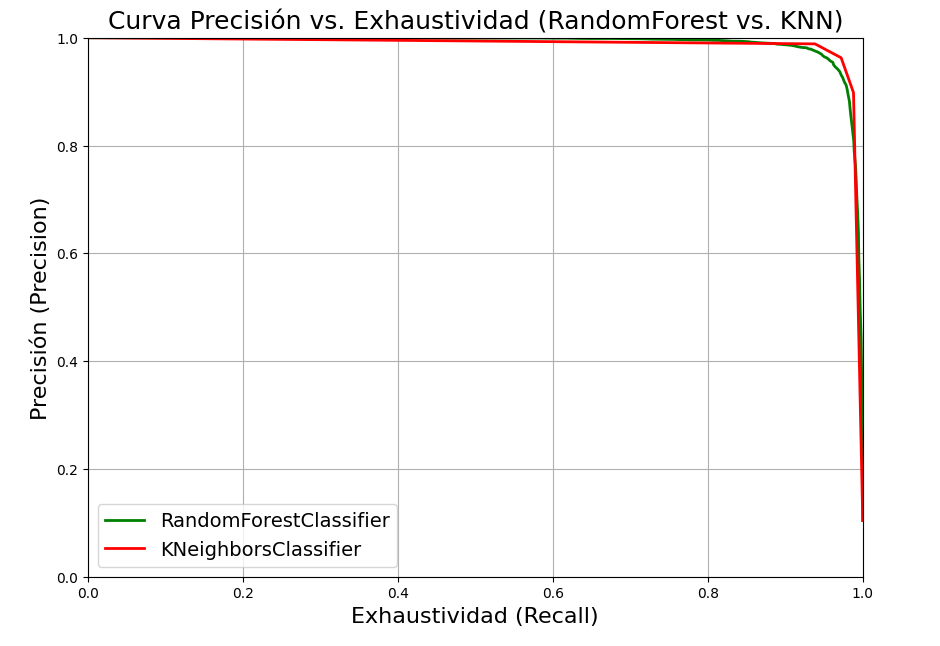

Maryorie Viluce
Implementar un modelo de clasificación utilizando datos de clientes para predecir si abandonarán un servicio (churn).
Se aplicaron técnicas básicas de aprendizaje supervisado.
Se cargó un archivo CSV con información de clientes. Se exploraron los datos, se graficó la distribución de clases y
se entrenó un modelo de Árbol de Decisión. Finalmente, se evaluó su precisión.
El laboratorio permitió aplicar un flujo completo de trabajo de IA: preparación de datos, entrenamiento de modelos y evaluación. Usar Thonny en vez de Jupyter no afectó los resultados esperados.
La siguiente imagen muestra el rendimiento del modelo de Árbol de Decisión al clasificar correctamente los datos del conjunto de entrenamiento.

Esta gráfica compara cómo varían la precisión y la exhaustividad de los modelos Random Forest y KNN.
Permite visualizar cómo la precisión de los modelos cambia a medida que varía el umbral de decisión.
Ilustra cómo la exhaustividad (recall) varía con diferentes umbrales para Random Forest y KNN.
Esta curva compara la tasa de verdaderos positivos contra la de falsos positivos para ambos modelos. Muestra su desempeño general.